Predicting patients with Brain stroke
using the Logistic Regression classification Algorithm.
Data Source: Kaggle
Libraries and Packages: Scikit-learn, Python-Numpy, Pandas
Outline
Understanding the objective
Methodology
1. Data Setup
2. Data Cleaning
3. Defining a feature matrix
4. Building the model
5. Model Evaluation
6. Saving and Loading
7. Summary
Objective
Patients and medical attendants face a lot of uncertainity during, and after hospital encounters. Uncertainities like the possibilitty of a patient being diagnosed of an ailment after measuring certain vital signs. Machine learning models are capable of predicting a patient's outcome with up to a 90-95% accuracy. In this project, we will be building a model to predict and classify patients with the possibility of Brain stroke using the Logistic Regression Algorithm.Features
Categorical features
GenderAge
Marital status(Ever married)
Residence type
smoking status
Work type
Numerical features
Hypertensionheart_disease
avg_glucose_level
bmi
Prediction Variables
Output Variables
The target shows the diagnosis of brain stroke: Displays whether the individual is suffering from brain stroke or not : 0 = absence 1 = present The score is being used as a conditional statement for classification as viewed in the deployed model section.1.Data Setup
- Pip installing the dependencies.
- Loading the dataset and required libraries
2. Data Cleaning
The data was inspected for null values to remove abnormality. However, the dataset showed no missing values. 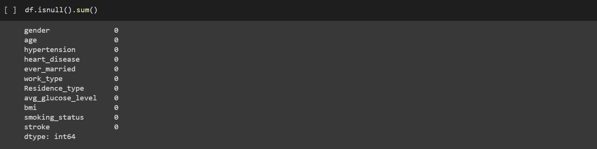 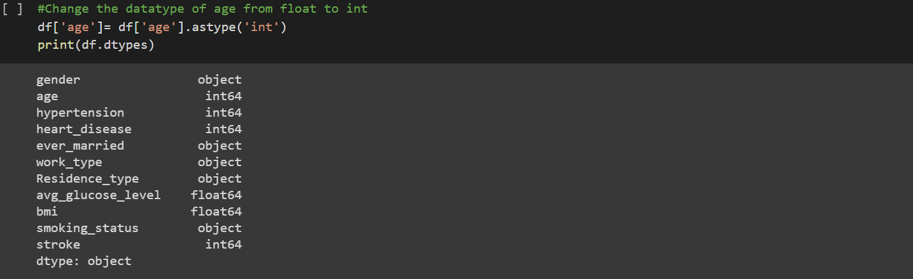3. Defining a feature matrix
Data was split into x and y to separate features to be trained from the response vector y 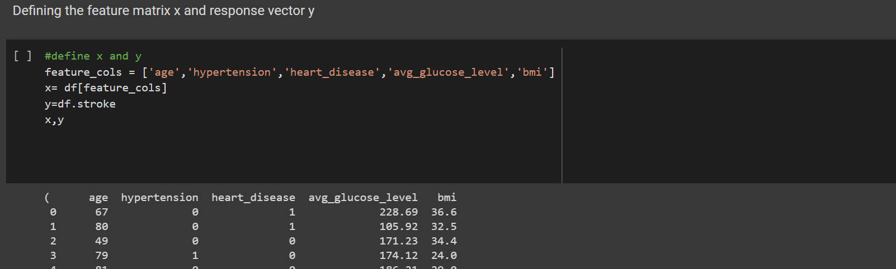 The data was then split into training and testing. 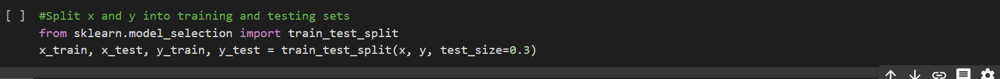4. Building the model
Check link 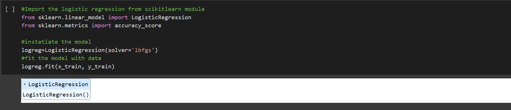 The Logistic Regression was imported from scikitlearn and fit into the split data for training. Predict the Target variable5. Model Evaluation
Model performance and Accuracy measurements was evalated using a number of performance metrics as shown below 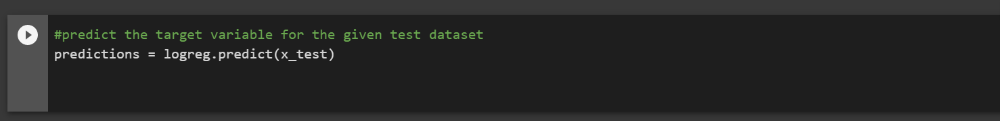 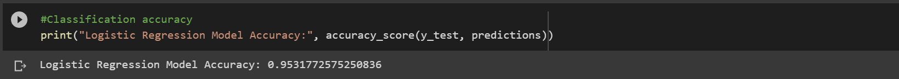 The model shows a classification accuracy score of 95%Comparing the Actual and Predicted response value for the first 30 predictions
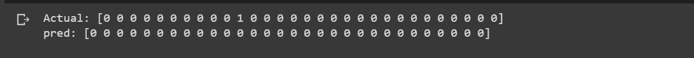 Confusion matrix
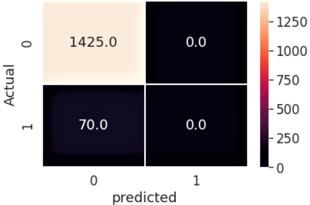
Using the confusion matrix to calculate the classification metrics
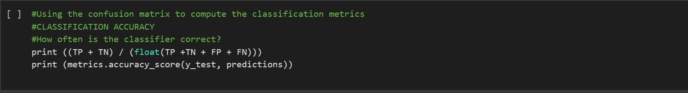
Printing a classification report 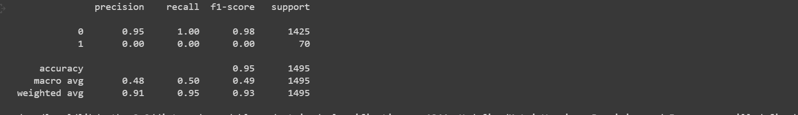 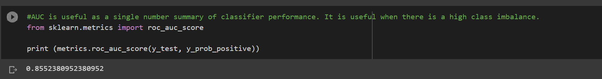 The Area under the curve (AUC) score shows 85% accuracy. This is ususally adopted when the class is imbalanced.